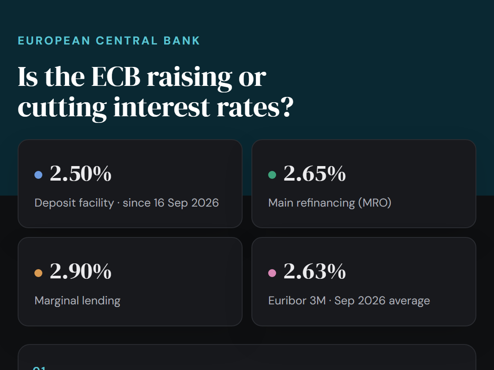
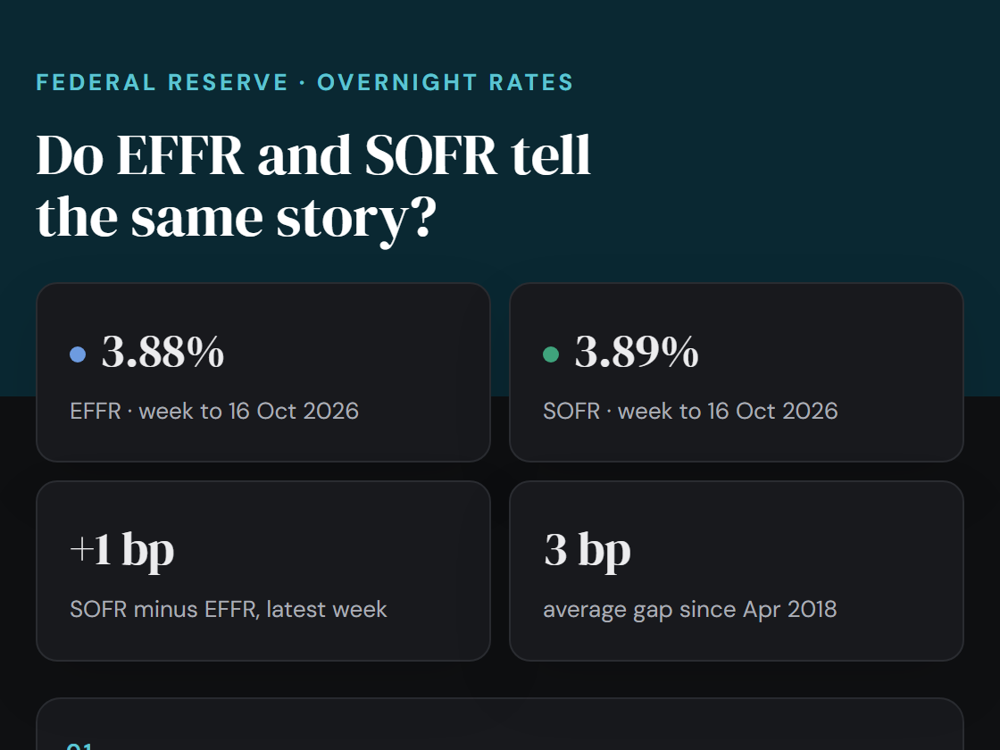

Main study
Main study
Rates & the Phillips curve
Did low interest rates bring the recovery? Fed funds, unemployment and inflation in 2008 and Covid.
More in this section
2 more
European Central BankECB key interest rates
Is the ECB raising or cutting? The key interest rates since 1999, with the 3-month Euribor.

Federal ReserveEFFR and SOFR
Do the two US overnight rates tell the same story? EFFR since 2000 and SOFR since 2018.